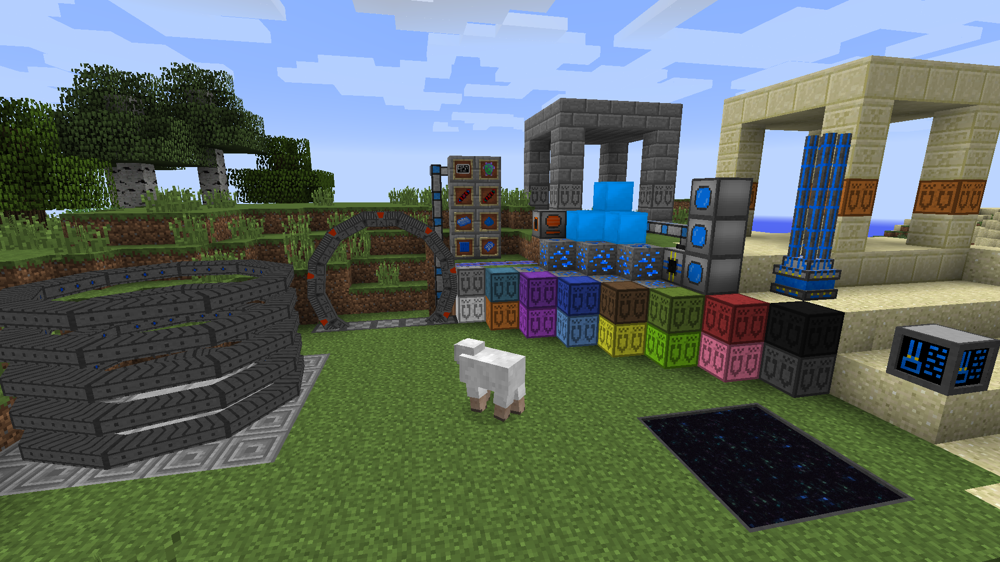

Welcome to StargateTech 2's Official website!
This is a rewrite of the original (and half-assed) website that was done at first (it's not like you could ask much for a site done in under 2 days :P )... but anyways, this is much better and will serve as a wiki for StargateTech 2. A good one, for a change :p
StargateTech 2 is a Minecraft mod based around Stargate technology, bringing the theme into Minecraft while respecting the Stargate canon as much as possible. Sometimes it is just not possible to fully comply with Stargate canon and we have to take shortcuts, but we do our best... Some other times we feel the need to add stuff that doesn't exist in Stargate so we just add it anyways in a way that makes it as plausible as we can (an example would be the Particle Ionizer).
StargateTech 2 gives credit to...

LordFokas
That'd be me! The developer and brains of the operation.
I develop the mod by myself (it's actually a pretty good exercise) and bug other mod devs :p
I'm also a Stargate fan, having watched all major 15 seasons (SGU doesn't count, it's a soap opera ._. )

Lizzy Trickster
In few words: She's like an arm and two legs to this project. Hosts this site, helps users out, keeps track of stuff,
helps develop this site, keeps EnderBot up and running in #StargateTech and much more!
Has also started a mod called LaserCraft that should have fun stuff to show sometime in the future.